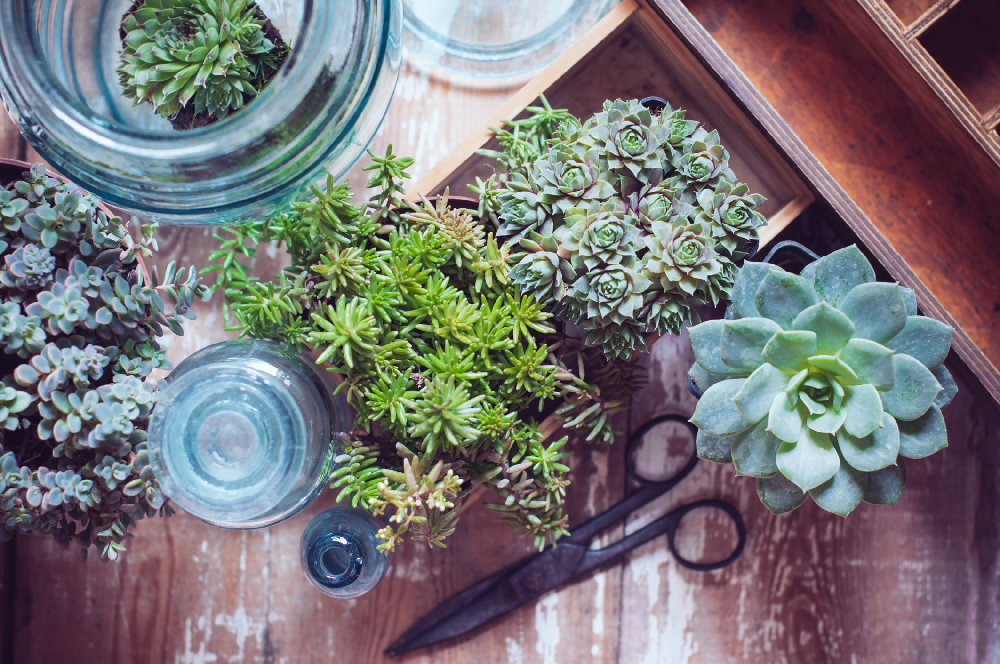
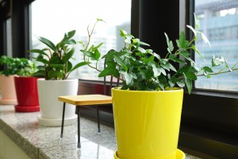
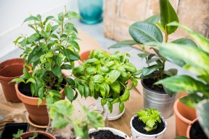
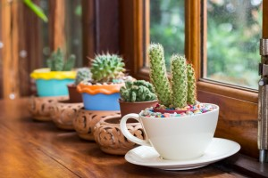
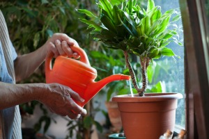

Indoor plants should be an essential component of every interior design. Greenery brightens up indoor spaces and are known to have mood-boosting qualities.
Indoor plants are popular because they are relatively easy to take care of, provide health benefits and can be used in a variety of indoor places themes. Indoor plants are a great option for those who have little yard space for an outdoor garden or for those who live in climates with severely cold winters.
So, if you are caring for indoor plants for the first time, our ultimate guide will provide you with the necessary information to allow your green friends to thrive.
To provide you with expert insight, we asked our Senior Horticulturist at Ambius, Matt Kostelnick, to answer the most frequently asked questions about indoor plants.
What are indoor plants?
How do you plant indoor plants?
How much light do indoor plants need?
What qualities make for a good indoor plant?
Which indoor plants require low light?
Which indoor plants are the easiest to take care of?
Which plants are considered indoor plants?
What are examples of some common indoor plants?
What are the best indoor plants?
How do you re-pot indoor plants?
How do you care for indoor plants?
How do you prune indoor plants?
How long do indoor plants typically live?
How do indoor plants affect people's mood?
Which indoor plants work well for small living spaces?
Are indoor plants expensive?
What is the best kind of indoor plant fertilizer to use?
How do I get rid of bugs on indoor plants?
How do I know when to water my indoor plant?
How do I care for peace lily plants indoors?

What are indoor plants?
Indoor plants are plants that grow indoors. There are a variety of tropical plants, like palms, that thrive in indoor environments.
How do you plant indoor plants?
Most of the time, indoor plants are already in containers, so there is no need to plant them. There are typically only two reasons you need to plant an indoor plant.
- If your plant is getting too big, then you will need to replant it into a larger container.
- If you wanted to grow bulbs indoors, then you will need to plant the bulbs yourself.

How much light do indoor plants need?
Succulents and cacti need continuous, daily sunlight. Plants with foliage need roughly 8 hours of light per day. The amount of light depends on the plants you are growing, so we suggest doing research on the specific plants you are growing.
What qualities make for a good indoor plant?
There are several qualities to look for when selecting an indoor plant.
- A good root system - This is incredibly important when choosing a plant. It's not practical to pull a plant out of its pot to check its roots but if it is a small plant, this can be done. Healthy roots are thick and light in color.
- Foliage- Here's a good rule of thumb when it comes to plants foliage: if you can't see through it, the foliage is thick enough.
- Check for disease - Some signs of a plant with pests or disease are: white dots, sticky residue on the leaves and a bad odor.
Which indoor plants require low light?
Indoor plants that need little light could be good fits for locations where light is more dim. Some plants that require low light are:
- Philodendron - A very common indoor plant that rarely attracts pests. It's a hearty plant that is adaptable to various environments
- Pothos or Devil's Ivy - A plant with colorful and vibrant leaves. This plant does great in a variety of environments, thriving in low light or in bright, indirect light.
- Dracaena - This is another popular indoor plant with long green leaves. This is one indoor plant you will want to prune if foliage gets too long.
- Peace Lily- This plant thrives best when the soil is moist, but not overwatered. If you want flowers to appear on your peace lily plant, move your plant to a darker room.
Which indoor plants are the easiest to take care of?
Below is a list of indoor plants that are easy to take care of:
- Sansevieria
- Philodendron
- Most succulents
- Pothos
- ZZ plant
Which plants are considered indoor plants?
Plants that require a low amount of light and water to thrive are typically known as indoor plants. Ambius considers these plants as examples of common indoor plants:
- Dracaena
- Hedera Helix
- Sansevieria Zeylanica Superba
- Scindapsus
What are examples of some common indoor plants?
More examples of common indoor plants include the following:
- Aglaonema
- Dracaena
- Ferns
- Philodendrons
- Palms
- Pothos
- Spathiphyllum
- Succulents
What are the best indoor plants?
Good indoor plants will tolerate lower light and humidity. Also, they will be less likely to deal with pests. Plus, they usually do not grow too much (you wouldn't want an indoor plant to grow at a rapid rate). The best indoor plants include the following:
- Aglaonema - It is attractive, tolerates low light, and does not grow too quickly.
- Aspidistra - You should not need to give it a lot of water and it will handle low light. If you like to take a vacation and dont want to be concerned about your plant, aspidistra a great one for you.
- Succulents - Make sure you give them bright light.
- Dracaenas
- Philodendrons
How do you re-pot indoor plants?
Unless your indoor plant has become too large for the pot it is in, you typically dont need to re-pot indoor plants. For steps and tips on how to properly re-pot plants, check out our blog on re-potting plants.
How do you care for indoor plants?
Here are some tips that will help you care for indoor plants:
- Keep potting soil moist- It's important to make sure soil is not too wet nor too dry
- Make sure the plant pot has drainage holes in the bottom of the pot
- Place your plant near a light source, whether it's natural or artificial
- Determine what species of plant you have so you can more accurately care for it
How do you prune indoor plants?
If you have no reason to prune plants, dont do it. But, if you notice your plant getting tally and spindly, then we recommend you prune them.
What are some of the common reasons indoor plants die?
Some of the most common reasons plants die are:
- Overwatering or underwatering
- Light Levels (either not enough light or too much light)
- Neglect

How long do indoor plants typically live?
On average, indoor house plants last 2-5 years. After that, plants stop thriving and it's best to invest in another plant.
Which interior plants improve air quality the most?
All plants can act as air purifiers but these plants are more beneficial than others.
- Red-Edged Dracaena
- Weeping Fig
- Bamboo Palm
How do indoor plants affect peoples mood?
People are often surprised on how beneficial indoor plants are. Not only do plants clean the air, but they also reduce noise levels and stress in the workplace. For more information on the benefits of indoor plants.
Are indoor plants expensive?
Indoor plants are known for being very affordable. The smaller the plant, the less expensive it will be. We do warn customers from buying plants from large retailers. Oftentimes, large retailers will sell coconut or palm trees, which are large indoor plants sold at a relatively low price.
Just because a plant is large and sold for a low price does not mean you are getting the best deal. We recommend doing some research prior to buying or speaking with a salesperson at a gardening center.

Which indoor plants work well for small living spaces?
The plants below are great for those living in apartments or working in a small workspace. Here is a list of small plants great for small spaces.
- Philidrens
- Succulents, if you have a good light source
- Hedra helix
- Devil Ivy
What is the best kind of indoor plant fertilizer to use?
Go to a garden center and look for a fertilizer with indoor plant on the label. You will use less fertilizer for plants inside versus outside, so ensure you use the rate specified for indoor plants. If you are getting fertilizer for blooming plants, look for a fertilizer labeled with the type of plant (orchids, for example) - but if it is unclear which one you should pick, its fine to use fertilizer for houseplants.
How do I get rid of bugs on indoor plants?
Bugs on your indoor plants can be really annoying! If you spot pests, go to a garden center and purchase an insecticidal soap, which usually is contained in a spray bottle. When you notice bugs, spray the entire plant - the undersides and tops of the leaves as well as the stem. Next, wait about two weeks and repeat the spraying. Then, wait two more weeks and spray again.
You will want to spray three times because the soap usually will not eliminate eggs, which could hatch. If your plant is dealing with a severe infestation and you are unable to eradicate the pests, throw out the plant. You can also use a damp paper towel to remove a pest.
How do I know when to water my indoor plant?

Over-watering is a common mistake, and you will want to make sure the plant actually requires water now or if it should wait until later. Here are some ways to see if it’s time to water:
- Soil probe - This probe will draw out soil, which will help you understand how dry the soil is below the surface.
- Moisture meter - This tool tells you, on a scale, how dry soil is.
- Lifting the plant up - Heaviness signifies the plant has enough water, but lightness signifies the plant is dry.
- Wilting - Wilting typically happens because the plant is not getting sufficient water. Lift the plant to see if it is light in weight or if its heavy.
- Tipping - If the leaf edges begin browning and are crispy to the touch, the plant likely needs water. If the leaf edges are becoming brown but feel mushy, the plant has likely gotten too much water.
- Yellow leaves - Yellow leaves may also signify that a plant has too much or too little water, but this is not always the case.
How do I care for peace lily plants indoors?
Peace lily plants (spathiphyllum) could make a nice addition to your indoor space, such as an office. These plants need to be watered moderately often, but make sure you do not over-water them. If your peace lily begins wilting, just give it some water. You’ll know it has enough if water begins seeping out of the pot’s drainage holes. Peace lilies also will handle low light. A north-facing window is a nice location for this plant, but you do not necessarily need to put it in a window.